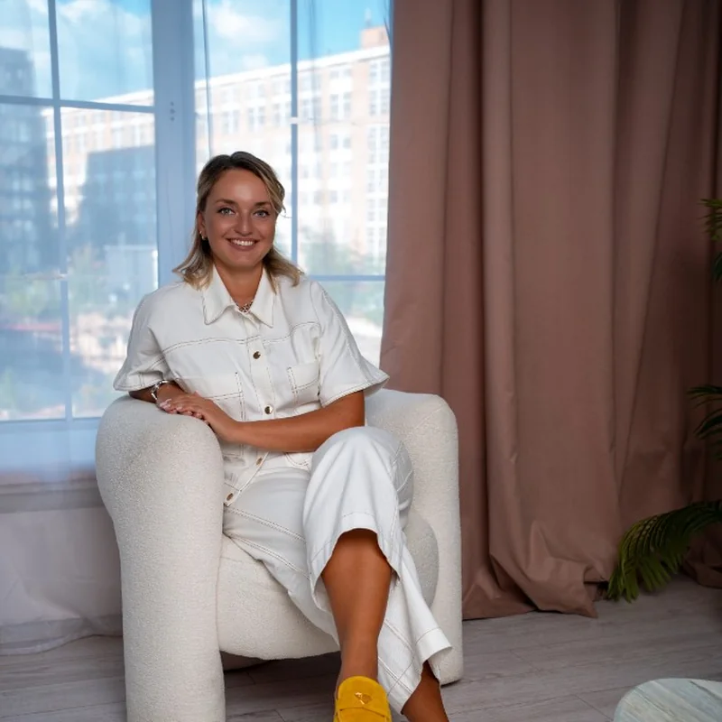

Yulia Desyatnikova
Founder
Founder of the centre. More than 40 years in children’s education: bilingualism, international programmes and future-ready skills.
Team
Our specialists bring together clinical, research, educational and practical expertise.
Enquiries are received by the centre’s care coordinator on Telegram — Alexandra Kokkinaki. Send a general message and we will help you get oriented and suggest a suitable format. This is not a private chat with a chosen specialist.
Founder
Founder of the centre. More than 40 years in children’s education: bilingualism, international programmes and future-ready skills.

Director of the Psychology Centre
Svetlana is responsible for the smooth running of the team, service development and the organisation of client care. She creates clear processes, coordinates specialists, develops new areas of work and ensures that psychological support remains timely, accessible and aligned with quality standards.

Clinical Lead
Ksenia is a clinical psychologist with more than 10 years of experience in child development and family support. She also oversees the quality of psychological services, helping the team maintain consistent professional standards, use evidence-based approaches and respond attentively to every client’s needs.
Yulia has worked in children’s education for more than 40 years and believes that the most important thing we can give children is the freedom to choose their own path. Her projects focus on bilingualism, international programmes and future-ready skills, bringing together hundreds of people around the world.
In 2017 it became clear that evidence-based psychology was still scarce in Russia. Yulia Desyatnikova decided to create a space for evidence-based child psychology in Moscow.
At first the centre was established as a psychology service within the bilingual school LGEG, where psychological expertise underpinned work with people and programmes. Psychologists helped design programmes for different ages, adapt materials to the needs of children and teenagers, and advised students, parents and staff.
From day one, clinical work was led by Ksenia Makarova. The first offerings were anxiety-management consultations that helped children cope with exam-related anxiety and remain in demand today. The team then developed career assessment, making it easier for teenagers to explore professional pathways.
From the outset, Yulia set a direction that still shapes the centre’s work: bringing together the best international practices with Russian research.
At every stage — from early observations to complex cases — specialists worked under ongoing supervision. This principle protected quality even as the caseload grew and new areas of work emerged.
Yulia Desyatnikova laid the foundation for an evidence-based approach to psychological support, and Ksenia Makarova put it into clinical practice — for children and adults. What began as support for learning has grown into a psychology centre.

Booking goes through the centre: a care coordinator will clarify your request and arrange a slot with a specialist.

Clinical psychologist
Clinical psychologist with more than 10 years of experience in child development and family work. She has worked in the United Kingdom, including at the Tavistock Clinic.
Professional interests. Child development and parenting; emotional and behavioural difficulties in children and teenagers; conflict and misunderstanding in parent–child relationships; parental stress and burnout; attachment formation, development and disruption; ADHD and OCD in children and teenagers.

Clinical psychologist
Clinical psychologist working in cognitive behavioural and behavioural approaches, with a focus on child development and neurodefectology. She supports children and teenagers with autism spectrum conditions, ADHD, OCD, anxiety, eating disorders and difficulties in parent–child relationships.

Child and adolescent psychologist
In work with children she uses play and creative methods; with teenagers and parents she draws on contemporary evidence-based approaches, including cognitive behavioural therapy (CBT) and dialectical behaviour therapy (DBT).
Anna helps families with anxiety, emotional and behavioural difficulties, relationship challenges, crisis states and self-esteem. She wants children to feel heard, and parents to find understanding and support.